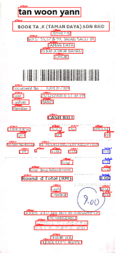

Update 2¶
Reminder of our project description and Update 1:¶
The goal of our project is to be able to extract information from an invoice. The motivation behind this comes from the fact that AppFolio has many invoices and analyzing them could provide valuable insights to the company. We are now focusing on getting the total value that a customer would have to pay, but there is other valuable information to extract in future steps of our project. For each invoice, we have the image of the invoice and the corresponding OCR (Optical Character Recognition) scan - which takes an image and extracts the text into a separate file. Our OCR contains each word in the image and their corresponding bounding box location. For example, it could have the word “total” and the coordinates of the bounding box that surround that word. Right now our main goal is to extract the total value and the Reference ID from all this data.
Until recently, we have been working with the SROIE (Scanned Receipts OCR and Information Extraction) dataset from the ICDAR competition, with which we have created a “human approach” algorithm to extract the main keywords, such as the total value, from the data.
What we’ve done:¶
In regards to data access, we have finally gotten access to the Appfolio dataset, which is composed of:
images of the invoices
csv files composed of bounding box annotations for each word in the invoices (Optical Character Resolution scan)
the metadata of each invoice upload, which includes a Total amount value that we can use as validation for our models that extract the total amount from an invoice
Therefore, we have two datasets on hand that we can definitely use to train our extraction models for total value, and just the Appfolio dataset for extracting the reference IDs of each invoice. If needed, we can decide to include other invoice datasets for our model fine-tuning, such as the FUNSD (Form Understanding in Noisy Scanned Documents) dataset.
Started implementing LayoutLM, which is a Natural Language Processing (NLP) approach which also incorporates layout of a document to get the total value. To finetune this model, we are utilizing the text in each invoice, the bounding box locations for each text, and the label for them. For example, we could have [120, 40, 160, 60] as the coordinates for the top left and bottom right points of the bounding box, “company” as the text inside that box, and “other” as the label since it does not correspond to the total value of the bill. Once we finish fine tuning the model we should be able to predict the label for each bounding box and corresponding text/number inside it. We tried the model on another dataset (FUNSD), which contains noisy scanned documents and could be easily preprocessed to the right format since the code to do this was publicly available. To use LayoutLM on the AppFolio dataset, we first had to define a Pytorch DataLoader that allows us to transfer each batch of data to a GPU, which is much faster than a CPU for deep learning. This is important because we can’t actually transfer all the data to a GPU because it would take too much memory and slow down computation. Additionally, we had to normalize each bounding box, which standardizes the coordinate system for the invoices. Lastly, to convert the words into something “understood” by the model, we had to use a tokenizer, which basically converts words/sentences/terms into smaller units called tokens. We used the LayoutLMTokenizer, in particular, which encodes/converts each sequence into numbers (input_ids). One example would be:
Before tokenization: This is the LayoutLM tokenizer!
After tokenization: [101, 1188, 1110, 1103, 22002, 3554, 22074, 22559, 17260, 106, 102]

(Predictions of LayoutLM for the FUNSD dataset, which is similar to the Appfolio Dataset)
As an alternative approach, we started our implementation of using object detection to classify key data within the invoice. Object detection is an expansion of image classification, in which rather than simply classifying an image, the detector outputs the localized bounding box coordinates as well as the predicted class. Our team decided to go with Detectron2, Facebook’s open source object detection library. Detectron2’s architecture works by building a feature pyramid network and a region proposal network (RPN) to isolate areas of high interest based on similarities to bounding boxes from the training data. A feature pyramid network works by slowly propagating pixels of bounding boxed images through a neural network, and the region proposal network detects areas of interest from the main photos and feeds it back into the neural network. The RPN makes the Detectron2 algorithm much more efficient, by anchoring images through a sliding window approach. The main reasoning behind the decision to use Detectron2 was based on Detectron2’s capability of achieving high confidence with a relatively simple structure, as well as having ample collections of pretrained models for various object detection algorithms.
Worked on cleaning datasets so as to get them in the format we needed for our models (as mentioned before within the individual sections). For detectron2, this included creating bounding boxes around every text of interest and then including the width, height, and label for the bounding box. This is then included with the actual features of the image in a json format.
Implemented a function to visualize the predictions of our models. This is useful in order to see what the label for each bounding box is.

(from the SROIE dataset: total values labeled)
Obstacles:¶
Getting the data in the right format for each model has been harder than expected.
We were just recently exposed to the Appfolio dataset, which is noticeably more complicated than the practice dataset we’ve been handling.
Individual invoices are a lot longer compared to the SROIE dataset. This increase in the amount of text simply makes our task harder.
Unlike SROIE dataset having bounding boxes containing groups of words, the Appfolio dataset has a bounding box for each individual word or value. This can come off as a challenge as we would often have to combine the boxes to come up with one label.
The OCR scan of the invoice is not 100% accurate. Most scans give high confidence values and accurately represent the actual text, but there have been some cases of incorrectly scanned text observed.
Some key metadata introduced in the SROIE dataset does not exist in the Appfolio dataset, such as date or address. If we wanted to identify these values in the Appfolio data, we would have to hand label the training set ourselves.
Future Tasks:¶
We have thus far accomplished working with initial models and exploring different strategies. Our future goals are to pinpoint the model architecture that we will be working with, along with improving the accuracy of our models on both the SROIE and the Appfolio dataset. These models, once strong enough, can ultimately serve as a tool incorporated in Appfolio’s property management workflow.